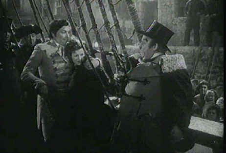

Image/1939/98m/FS 1.33
 |
The final confrontation. ©Image |
The waters along Cornwall on
the English coast present rough traveling for ships. Night navigation depends on the
warning beacons along the shore. An unscrupulous gang of down and dirty roughnecks is
luring the ships into the rocks, dispatching the crews without mercy and plundering rich
cargoes. Led by the imposing Joss Merlyn, the thieves’ den explodes when a newcomer
suggests that the loot is not being distributed fairly. Meanwhile, Merlyn’s niece,
Mary Yelland arrives from Ireland just in time to save the day for Jim Trehearne as Merlyn
turns the gang against this newcomer. Behind the scenes effete Sir Humphrey Pengallen
looms larger than life in a manor house casting a shadow on the nearby inn run by Merlyn.
Charles Laughton has a fine old time with a huge prosthetic nose
making Pengallen a definition of odious. He only has eyes for Maureen O’Hara who
gives her usual feisty performance as Mary. Robert Newton is solid as Trehearne and Leslie
Banks barks commands as Merlyn.
This Kino Video production distributed by Image Entertainment may
not be the greatest DVD to look at, but one must commend the companies for putting out
titles that veer from the typical new release track. The black and white source material
for the 1939 Jamaica Inn is not in great shape. Element dirt or scratches mar
almost every scene and there are longish sequences that have top to bottom vertical
scratches tarnishing the image. The image is sharp enough, but the contrast range is
limited and shadow detail is one-dimensional. The sound is rife with a persistent hiss.